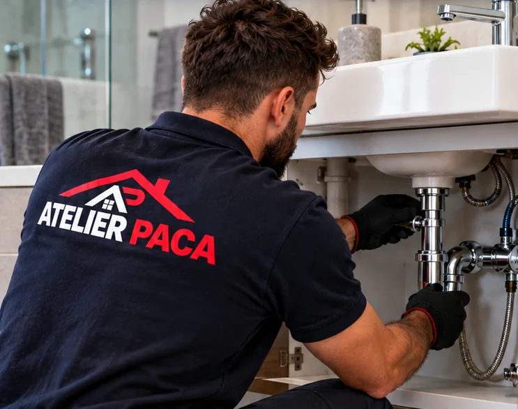

Dépannage, fuites et urgences 24h/24
Plombier à Saint-Raphaël
Plombier à Saint-Raphaël (83700) : dépannage, fuites, chauffe-eau, salle de bain par l'équipe Atelier PACA, basée à Antibes. Prix annoncé avant intervention, devis gratuit, astreinte 24h/24.

Atelier PACA à Saint-Raphaël
Saint-Raphaël et ses quartiers de bord de mer (Boulouris, Agay) sont couverts par nos équipes mobiles depuis Antibes.
Nos prestations plomberie à Saint-Raphaël
Une fuite ne prévient pas, une canalisation bouchée non plus. Nos plombiers interviennent 24 h/24 pour stopper les dégâts, puis réparent proprement. Le prix est annoncé avant de commencer, y compris la nuit et le week-end.
- Recherche et réparation de fuite d'eau
- Débouchage de canalisation, WC, évier, colonne
- Chauffe-eau et ballon : dépannage, détartrage, remplacement
- Robinetterie, mitigeurs, sanitaires
- Rénovation de salle de bain et douche à l'italienne
- Remise aux normes des réseaux d'eau
Tarifs indicatifs à Saint-Raphaël
Localisation précise puis réparation immédiate pour limiter les dégâts des eaux.
Débouchage mécanique ou haute pression selon la situation.
Dépose de l'ancien appareil, fourniture et pose du neuf, mise en service.
Intervention rapide pour stopper une fuite de robinet ou remplacer un mitigeur.
Tarif minimum d'intervention : 110 € HT (TVA à 10 % ou 20 % selon la nature des travaux et l'ancienneté du logement). Autres prix indicatifs 2026. Majoration possible la nuit, le week-end et les jours fériés, toujours annoncée avant le déplacement. Tarif définitif communiqué avant toute intervention.
Quartiers couverts à Saint-Raphaël
Nous intervenons dans toute la commune : Saint-Raphaël centre, Valescure, Boulouris, Agay, Le Dramont, Santa Lucia. Habitat le plus fréquent : villas de Valescure, résidences de Boulouris et d'Agay, immeubles du centre.
Questions fréquentes — plomberie à Saint-Raphaël
En combien de temps un plombier arrive-t-il à Saint-Raphaël ?
Pour une urgence (fuite importante, canalisation bouchée), nous intervenons dans les meilleurs délais, souvent dans la journée. Saint-Raphaël est à 45 minutes de notre siège d'Antibes.
Pouvez-vous remplacer mon chauffe-eau à Saint-Raphaël le jour même ?
Dans la plupart des cas, oui : nous disposons des modèles courants en stock. Pour un chauffe-eau thermodynamique ou un format particulier, comptez 24 à 72 h.
L'eau est-elle calcaire à Saint-Raphaël ?
Comme sur toute la côte, l'eau est assez dure : chauffe-eau et robinetterie s'entartrent. Un détartrage régulier du ballon prolonge nettement sa durée de vie.
Les autres métiers Atelier PACA à Saint-Raphaël
Plomberie dans les villes voisines
Plombier à Saint-Raphaël : on vous rappelle sous 2 h
Appelez, écrivez sur WhatsApp ou laissez vos coordonnées : un technicien vous répond avec un prix clair.